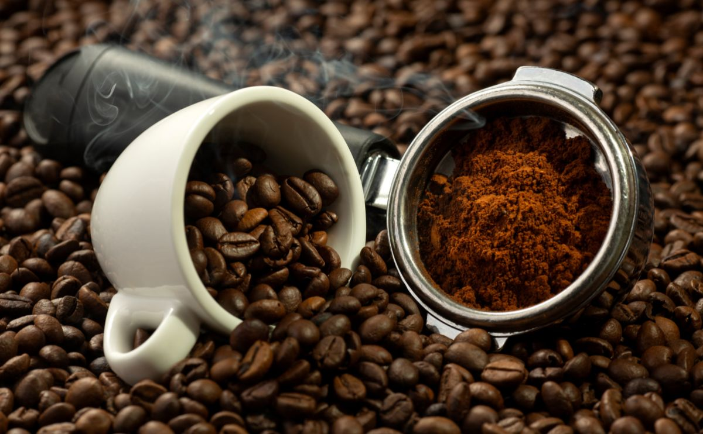

Café Brasileiro domina o mercado global e segue como líder mundial
Produção recorde, expansão internacional e crescimento dos cafés especiais impulsionam o Brasil no setor cafeeiro.
O Brasil permanece como o maior produtor e exportador de café do mundo, responsável por aproximadamente 25% a 30% de toda a produção global. Graças à diversidade climática e à tradição centenária no cultivo, o país mantém posição dominante nos mercados internacionais.
Além do volume, a qualidade dos grãos brasileiros é amplamente reconhecida. Regiões como Minas Gerais, Espírito Santo, Bahia e São Paulo produzem alguns dos cafés mais apreciados por consumidores e especialistas.
Principais destaques da produção brasileira
Arábica: o queridinho mundial
Representa mais de 70% da produção brasileira. Possui sabor suave, acidez equilibrada e maior valor comercial.
Robusta: força e produtividade
Muito produzido no Espírito Santo, é ideal para cafés solúveis e blends mais intensos devido ao seu teor maior de cafeína.
Mercado em expansão
O consumo de cafés especiais cresce mais de 15% ao ano, colocando o Brasil entre os maiores fornecedores premium do mundo.
Principais destinos do café brasileiro
Os países que mais importam café do Brasil são:
- Estados Unidos
- União Europeia (Alemanha, Itália e França)
- Japão
- Canadá
- China
Mercados exigentes continuam ampliando a demanda pelos grãos nacionais graças à reputação de qualidade e ao compromisso com práticas sustentáveis.
Comparação dos principais tipos de café brasileiros
| Tipo de Café | Preço Aproximado | Vantagens |
|---|---|---|
| Arábica | R$ 30 - R$ 80/kg | Sabor suave, notas florais, alta complexidade |
| Robusta | R$ 15 - R$ 35/kg | Alta cafeína, sabor forte, ideal para solúveis |
| Café Especial | R$ 60 - R$ 200/kg | Traços únicos, produção selecionada, maior valor |